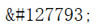
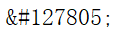

🌚 ponder-1: Structure of A JavaScript Function
Q1: What Is parameter, What Is argument?
A parameter is the variable listed inside the parentheses in the function definition. It can be viewed as a place holder.
An argument is the actual value that is sent to the function when the function is called.
Q2: What does the keyword return do? Can we delete the line with return?
Click the button to see what happens, and modify the code to fix the bug
See the Pen ctc-memo-pass-by-value-without-return by eecs1012 (@eecs1012) on CodePen.
Functions return (pass back) values using the return keyword.
return ends function execution and returns the specified value to the location where it was called.
A common mistake is to forget the return keyword, in which case the function will return undefined by default.
🌚 ponder-2: Parameter of Primitive Types: Pass by Value
There are 7 primitive data types: string, number, bigint, boolean, undefined, symbol, and null. In JavaScript, all function arguments with primitive types are always passed by value. It means that JavaScript copies the values of the variables into the function arguments. Any changes that you make to the arguments inside the function do not reflect the passing variables outside of the function. In other words, the changes made to the arguments are not reflected outside of the function.
How the script works.
1) declare the variable originPrice and initialize its value to 1.00 million:
2) define a evaluate() function that accepts an argument--price.
3) pass the variable-originPrice into the evaluate() function. When passing the variable originPrice to the evaluate() function, JavaScript copies originPrice value to the variable-price.
4)The function assigns the price * 1.10 to the argument-price.
5)the evaluate() function changes the variable-price. However, it does not impact the value of the variable-originPrice because price and originPrice are separate variables. When exiting the function evaluate(), the value of the variable-originPrice does not change after the evaluate() function completes.
6)evaluate() assign the return value price to the variable-currPrice.
🌚 ponder-3: Call Sub-Algorithm Example
Draw a flowchart: Given an array of numbers, count how many perfect numbers it contains.
A perfect number is a positive integer that is equal to the sum of its positive divisors, excluding the number itself.
For instance, 6 has divisors 1, 2 and 3 (excluding itself), and 1 + 2 + 3 = 6, so 6 is a perfect number.
Hint-1: At the design stage, focus on the main algorithm first, abstract the sub-algorithm into merely a function name.
How to Properly Name the Sub-algorithm
It is the descriptive name of the sub-algorithm that make the program easier to understand. Hence the name of the sub-algorithm is very important. There exist many well-known function prefixes like create…, show…, get…, check… and so on. Use them to hint what an algorithm does.
🌚 ponder-4: Why do we need to call subalgorithm?
1. Do You Need to Draw the Flowchart for the Subalgorithm If You Have Done It Before?
Calling subalgorithm allows code to be reused.
2. Avoid Code Duplication
Jeremy Clarkson is going to interplant potatos and corns to increase the productivity. That field has 10 field ridges, each ridge is of 10 plants' length. In HTML, potato is represented by , corn is represented by 
Q1.Code without calling subalgorithm.
Q2.Code by calling a subalgorithm "plantRow(vegetableName)"
Q3.If Clarkson is going to adopt one of the two algorithms to design and draw the blueprints for all fields in his farm, which one would he use? Why?
See the Pen ctc4-subalgorithm-interplant-duplication-quest by eecs1012 (@eecs1012) on CodePen.
3.Improve the Readability and Maintanence of the Code
Meditation In Depth
Whenever you see the same computation multiple times in a program,
you should create a separate (helper) function for that computation and call that function instead.
This enables you edit the program in only one place if something changes.
For example, clarkson invests a larger farm with each filed to be larger,
then he only needs to change the value of length inside the subalgorithm.